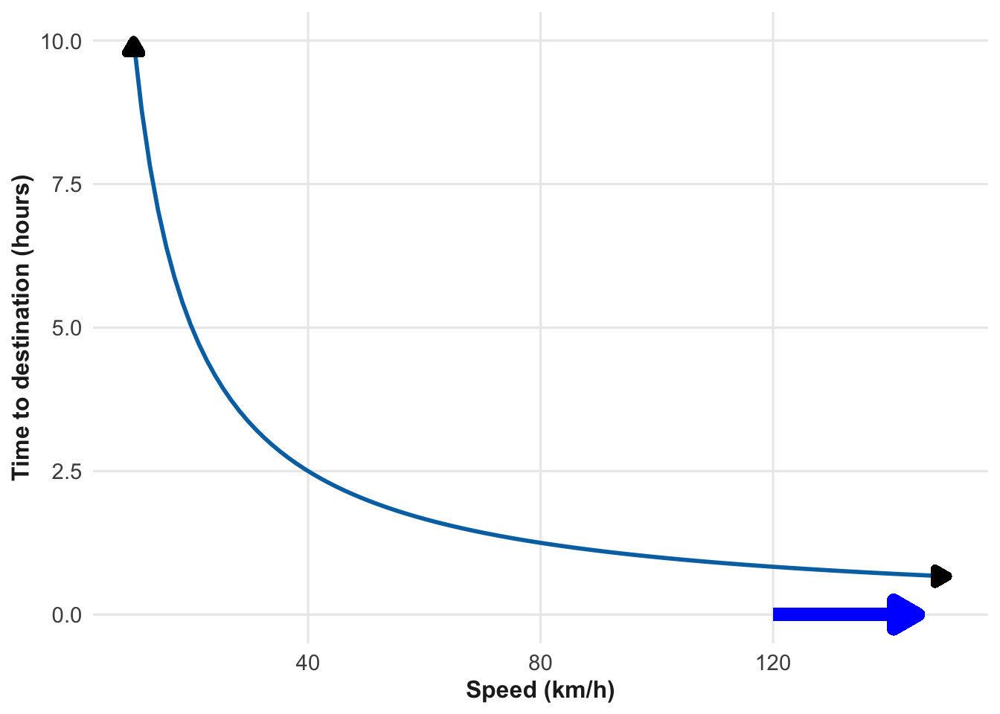
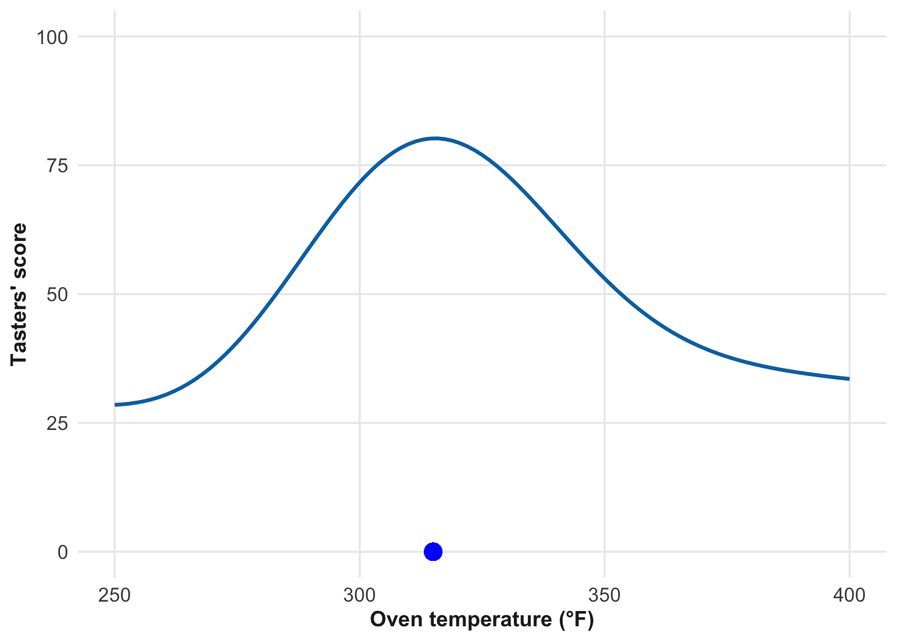
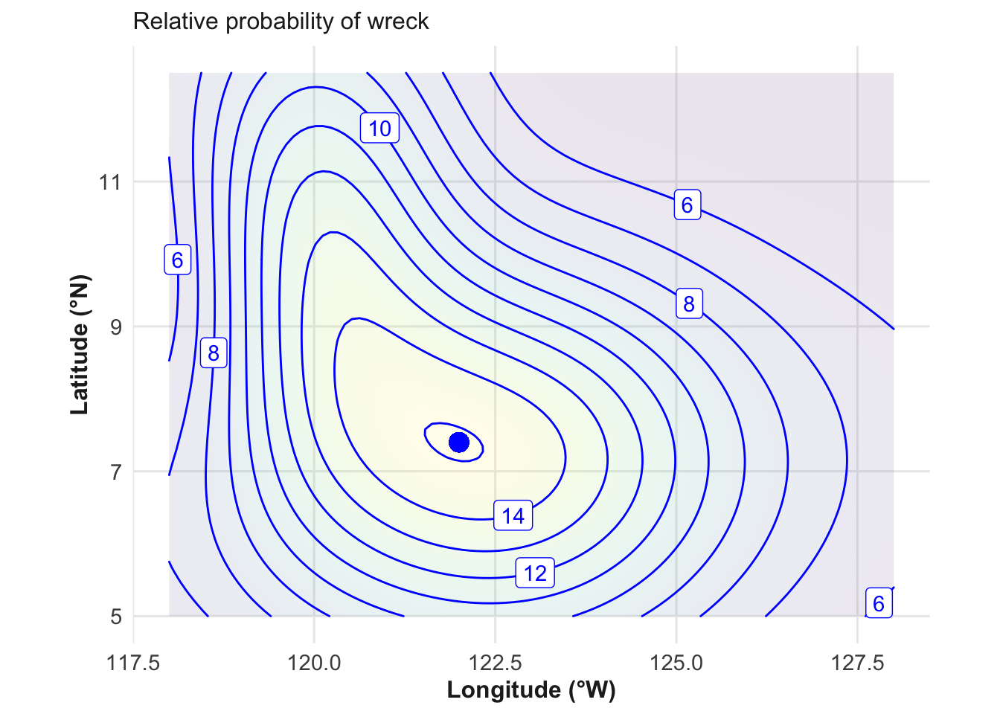
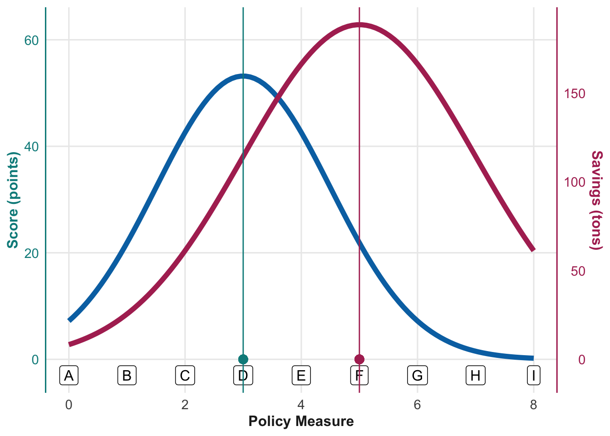
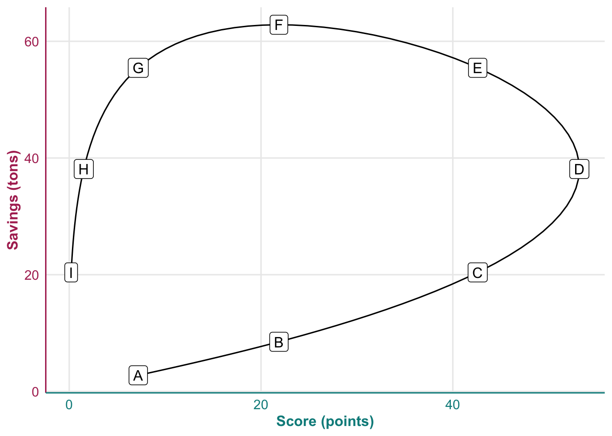

10 Trade-offs
Vocabulary Review
- arg (6)
- data (2)
- dimension (2)
- functions (6)
- mean (8)
- per (3)
- point (3)
- relative probability (8)
- value (2)
- worth (3)
New
- argmax
- argmin
- dominates
- incommensurate
- maximum
- minimum
- objective function
- shadow price
- trade-off
The everyday verb “trade” involves exchanging one thing for another. Buying lunch is a trade: you exchange money for food. Almost always, such an exchange involves two parties, in this case a buyer and a seller. A ☞ trade-off ☜ is a kind of trade that involves only one party who has to balance competing objectives. A person who decides to buy a cheaper lunch in order to have money for a movie faces a trade-off between the quality of the food and the amount of money available for entertainment.
Trade-offs often involve money, but not always. For instance, a painter bending far from a ladder to get to that last little bit of unpainted third-story window trim is trading off efficiency for safety. Another painter, who climbs down and moves the ladder closer to the window, faces the same trade-off but evaluates it differently. The second painter is prioritizing safety over efficiency.
This chapter is about describing trade-offs and some of the ideas that can be used to deal with them quantitatively.
10.1 Optimization
“Optimization” is a mathematical topic that deals with finding the best from a set of possible choices. There are many technical situations in which optimization techniques are useful. An example is calculating the coefficients used in linear regression. But optimization is also used, importantly, in routing and logistics, for example finding the best sequence of stops for a delivery van or the layout of transistor circuits on an integrated silicon chip.
In a trade-off, the existence or meaning of “best” is not clear-cut. Still, some of the terminology from optimization is useful for describing trade-offs quantitatively.
The structure of an optimization problem involves a function—called the ☞ objective function ☜—whose input domain is the set of possible choices. An objective function is a tool that allows systematic comparison of the available choices in terms of the outcome each one will produce.
Remember, the domain of a function is the space of legitimate inputs to the function.
Optimization can involve one or more objective functions, although most mathematics courses emphasize the single-objective case. Optimization with a single objective function is a good way to introduce the basic concepts and terminology, but trade-offs typically involve multiple objective functions.
An objective function is a perfectly ordinary function along the lines discussed in Chapter 6 or Chapter 9. The modeler constructs an objective function to capture a particular goal in the optimization problem. For instance, apartment hunting can be seen as an optimization problem where the input domain is the list of available apartments for rent. One typical objective is to maximize the square footage of the apartment, others are to minimize the rent and distance to work, and to maximize the quality of the neighborhood, etc. These are four different objectives and each is represented by its own objective function. In this case, the modeler building the objective functions would assemble a table over each of the available apartments with each objective function being a column in the table. For instance, square footage would be one column, rent another, and so on.
The term “objective function” is properly descriptive. In optimization problems one has some goal in mind—the objective, the output of the function—and seeks to select an input value that will produce the largest value of that output.
Optimization problems sometimes involve situations where the goal is to minimize rather than maximize the output. Any minimization problem can be turned into a maximization problem by putting a minus sign in front of the objective function.
The “solution” to the optimization problem is the input value that achieves this maximum (or minimum) output. The output achieved is called the objective function’s ☞ maximum ☜ or ☞ minimum ☜, depending on the context, but the point is to find the input value that produces it. Such an input could be reasonably called the “optimum input,” but the technical name for it is the ☞ argmax ☜. For a minimization problem, the corresponding word is ☞ argmin ☜.
“Argmax” and “argmin” are not ordinary English words; they are syllabic abbreviations, like FedEx (short for Federal Express), formed from the first syllables of words in a phrase. The phrase relevant to optimization is “the argument that produces the maximum output value.” Keep in mind that “argument” in this phrase is used as a synonym for “input.”
Figure 10.1 shows the argmax for a simple objective function that takes a single input. In the spirit of fun, we imagine that the output in panel (a) is the quality score (output) assigned to a pastries baked at several different temperatures (input). The blue dot marks the argmax. We’ve placed the dot on the temperature axis as a reminder that the argmax is an input value. Applying the objective function to that input value—that is, baking a pastry at that temperature and tasting it to give a quality score—gives the highest score pastry compared to pastries cooked at other temperatures.

The argmax, that is, tastiest baking temperature for the pastry is 315 °F.
Objective functions in different contexts can have many more inputs. The argmax is the setting for all the inputs that gives the highest output value. In professional work, its common to have objective functions that have tens or thousands of inputs. You can’t make the sun shine or the wind blow, but you can turn on a natural gas turbine very quickly. Nuclear power plants have a long start-up time. An old coal-powered generator takes hours to turn on and wastes energy when it’s turned off. An example is provided by electric utilities that have to plan out a days-long schedule for different generation resources—solar, natural gas, wind, nuclear—to meet predicted demand at the lowest cost.
In training Large Language AI models, the objective function literally can have billions of inputs.
We can’t readily visualize a function with many inputs, so the graphical example we will use here has just two inputs. (In Chapter 16 we introduce computational strategies for handling more inputs.) Figure 10.2 shows an imagined scenario where satellite and aerial magnetic sensing data have been used in a computer model to estimate the relative probability for each possible location of a sunken ship. That is, the computer model is the objective function. The people coordinating a search using submersible robots can use this objective function to map out their search. It’s might be sensible to start the search at the argmax—the most likely location—then move out to lower probability areas until the ship is found.

The objective function in Figure 10.2 has its argmax at geolocation (122 W, 7.4 N). But the relative probability there is not much higher than at areas within about \(\pm 1\) degree of longitude and latitude. So the salvage party might not find the wreck at the argmax and need to search nearby.
Finding an argmax when the objective function takes only a few inputs is not hard. It becomes harder when there are many inputs related in a complicated way. For example, training a Large Language Model can take days or weeks of intensive, expensive computer processing.
10.2 Toward trade-offs
Often, the purpose of finding an argmax is to guide a decision or choice. In UNRESOLVED fig-argmax-examples(a), the choice involves setting the oven temperature to produce the tastiest cake. In (b), the choice is where to start searching for the sunken wreck.
Sometimes, however, the proposed objective function does not capture all relevant considerations. In such cases, the argmax of an objective function may not guide a good decision. For instance, consider the objective function in Figure 10.3 that takes an automobile’s speed as input and produces as output the time until the car reaches its destination. This is a minimization problem, since we want to take the least time possible to get to the destination.
Figure 10.3 shows the objective function. Naturally, the faster the car goes, the less time it takes to reach the destination. We’ve marked the argmin near 120 km/h on the graphics input scale, but mathematically any input larger than this would result in an even better (lower) output, which is the meaning of the blue arrow. Keep in mind that the blue annotation corresponds to an argmin, even though it is at a high speed.
Remember: The “min” in argmin refers to the output of the objective function, not the input. The “minimum” is the about the output of the function, the “argmin” is about the input that generates the minimum output.
The optimization result—the argmin being at a high speed, i.e., go as fast as possible—violates any driver’s common sense. The problem is that the model has only one objective: minimizing time to destination. Any responsible driver will incorporate additional objectives into the decision-making process. Let’s list some of these:
- minimize time to destination
- maximize safety
- maximize fuel efficiency
- minimize legal violations
Each of these objective functions, when considered in isolation, has its own argmax or argmin, depending on whether the output of the function is to be maximized or minimized.
- Time to destinationArgmin: Go as fast as possible.
- Safety: Argmax: Drive at a safe speed. If there is traffic, a safe speed will be similar to other cars on the road. If no traffic, heed visibility and road conditions.
- Fuel efficiency:Argmax: Look up the most fuel-efficient speed for your car on a trustworthy web site. On a windless day, this is likely to be around 80 km/h (50 mph).
- Lawfulness: Argmin: Keep speed at or under the legal speed limit.
Depending on conditions, the objective functions can be in conflict with one another. For instance, when traffic is exceeding the speed limit, the safety goal conflicts with the legal compliance goal. Each of the goals (2), (3), and (4) conflict with (1).
Such conflicting objectives are the origin of trade-offs.
10.3 Resolving trade-offs
A key feature of an unresolved trade-off is that the outputs of the various objective functions are ☞ incommensurate ☜ with each other. If they were commensurate, we could simply add the outputs of the various objective functions together, to produce a single objective functions, a situation giving an easy answer.
An important quantitative approach to trade-offs is to find conversion factors to transform the output from each objective function into a common unit, allowing for direct comparison and aggregation. (As we will see, the conversion factors are called shadow prices.)
Drivers deal with the driving-speed trade-off in the previous section every day using intuition or heuristics. One important heuristic here is “obey the speed limit.” By way of justification for the heuristic, a driver might argue that the speed limit is set based on safety considerations and, since the government has an interest in reducing fuel consumption, is likely close to the optimal speed for efficiency. Another heuristic is “follow the flow of traffic,” which is particularly valuable when the flow of traffic exceeds the posted speed limit. And in special circumstances—snow, ice, dense fog—even the flow of traffic may not be a good guide.
It’s unlikely that a careful quantitative analysis would provide better guidance than the heuristics already in use. But I want to draw on the driving situation to illustrate what mathematical approaches are available to guide decision-making in general. Using a non-controversial issue as the example—driving—frees us from the preconceptions, political, and ethical stances that often complicate discussions in other domains, such as health care, government spending policies, and environmental regulations.
Even if we do not perceive the four objectives in highway driving as active elements in our everyday choices, a simple thought experiment can reveal that each would be deemed important under changed circumstances.
For instance, suppose that fuel costs went up by a factor of 100, that is, that gasoline cost about $400 US per gallon (approximately $100 per liter). The fuel-related cost of driving a mile would increase from about 15 cents per mile to about $15 per mile. We can construct a small model to quantify the implications of this. Supposing that a highway speed reduction from 60 mph to 40 mph reduces fuel consumption by, say, 20%. Travel time on a previously 1 hour trip (60 miles at 60 mph) would increase to 1.5 hours (60 miles at 40 mph): a 30-minute increase in travel time. This time increase is offset by the savings on fuel. At $4 per gallon fuel cost, the 20% reduction in fuel use would save 3 cents per mile, or $1.80 over the 60-mile trip. Judge for yourself whether a savings of $1.80 is worth the extra 30 minutes of travel time. I think most people would say no. At the higher fuel costs, the savings would be $180. I suspect most people would gladly exchange 30 minutes of their time for $180.
You might discard this observation on the grounds that the hypothetical 100-fold increase in fuel costs is unrealistic. That people would change their behavior in this extreme scenario, however, is a signal that drivers are sensitive to fuel costs. Think for yourself whether a $90 savings would be worth the 30 minutes. Or perhaps $45 would be worth it, or even $15. If so, we don’t need the 100-fold increase to make the point; an 8-fold increase is all that’s required.
Now consider a scenario in which a zero-tolerance policy to speeding is adopted. Any violation of the speed limit would lead to a suspension of your driver’s license. Would this change your driving behavior? Most likely it would. (At least until the next election when the people responsible for the policy would be thrown out of office).
To simplify the discussion, Figure 10.4 imagines an optimization context with two objective functions, Score() and Savings(). The input to each is a policy measure (analogous to the speed you choose to drive). For easier comparison between the two functions, they have been overlaid on the same plot. For each function, the argmax is an input value, that is, a point on the horizontal axis. The two functions have different argmaxes. And there are different vertical scales, one applying to Score and the other to Savings. Note that the vertical scales differ not just in amount but in dimension: one is a “Score in points” and the other is a “Savings in tons.”

If Score() were the only objective function, we would set the policy measure to 3, the argmax for Score(). Similarly, if Savings() were the only objective function, we would set the policy measure to 5, the argmax for Savings().
It would be handy to add the two objective functions together to produce a single function whose argmax can be conclusively found. But the outputs of the two objective functions are stated with different dimensions and units: score is in points while savings is in tons. That is, the two outputs are incommensurate. As described in Chapter 3, addition is not a valid operation when quantities have different dimensions. (A hint about what is to come: Division is valid even when the quantities have different dimensions.)
But if both objectives in Figure 10.4 are worthy of consideration, setting the policy measure at the argmax of one leads to a seriously suboptimal outcome for the other objective.
Let’s switch to another graphical format to illustrate the trade-off. In Figure 10.4 the horizontal axis the the policy measure, that is, the input to the objective problems. The two vertical axes correspond to the output of the two objective functions—Score() and Savings()—one axis for each function.
In Figure 10.5 we re-arrange the axes. First, we delete entirely the horizontal input axis and represent the input value as the position along a curve. For clarity, Figure 10.4 we marked with letters nine different input values. Those same letters appear in Figure 10.5 as locations along the curve. But the axes for Figure 10.5 are re-arranged versions of the two vertical axes from Figure 10.4. Each point on the curve shows the output of the Score and Savings function for one input value. For example, for the input value A, the position on the curve marked with A is based on the Score value for input A and the Savings value for input A.
From Figure 10.5, what can we say about which choice is the best? It’s important to keep in mind that each of the objective functions in Figure 10.4 is for a maximization problem. So bigger outputs are better. From the axes, you might translate this into a simple rule: move as far as possible to the north-east. But this isn’t right.

Figure 10.5 lets us compare any two input choices, say D versus E or A versus B. In order to claim that one of the labeled choices is better than the other, we need the outcome on both graphical axes to be better for one choice than for the other. For instance, both the Score and the Savings are larger at input B than at input A. Choice B is therefore better in all respects than choice A. In contrast, when comparing D versus E, we see that E has a larger Savings but it also has a smaller Score.
When comparing two inputs, as with A and B, if one is better in all respects—here this means better both in Score and in Savings—we say that one choice ☞ dominates ☜ the other. B dominates A.
We can compare any two input levels in this way. For instance, F dominates G because it has higher Savings and a higher Score. And D dominates C for the same reason. But we cannot demonstrate that F dominates D or vice versa; each is strong on one axis but weak on the other.
Since F dominates G, H, and I, we can eliminate those choices; they are sub-optimal. Similarly, D dominates C, B, and A, eliminating those as sensible choices.
Deleting all the dominated inputs, what’s left? Any choice from F through E to D.
Here is another, more human oriented way to look at the situation. Suppose we have two people, one a big fan of setting the policy measure to 8, that is, favoring option I. The other is more moderate and prefers option F. Now they are presented with the objective functions in Figure 10.4. The F-advocate can make a compelling argument to the I-advocate. Moving from I to F will accomplish both objectives better; a win-win outcome.
If the competition were between partisans of F, E, and D, however, the win-win argument doesn’t apply. To convince the F-partisans to move toward E (or further along, to D), the E-partisan would have to acknowledge that the increased outcome for Score (by about 22 points) would come at the cost of a decrease in the outcome for Savings (by about 8 tons).
Another way to say this is that there is a price for Score in terms of Savings. Usually, a price is a ratio of money per item, e.g. $2.89 per apple. Note that in a price, the item purchased is on the bottom of the ratio. And the top quantity does not have to be money; it could be tons of Savings. In this situation, switching between F and E entails a gain of 8 tons of Savings at the loss (that is, cost) of 22 points in Score. As a price for Score, this is 8/22 = 0.36 tons per point. This ratio is called the ☞ shadow price ☜. The word price is appropriate by analogy to the things we buy, measured as money per unit of the goods purchased, as in $4 per gallon of gasoline.
Whenever there is the possibility of an exchange, a price is the quantitative indicator to help determine whether the exchange is worthwhile. You wouldn’t buy a shirt if it were, in your opinion, too expensive. You get to make this choice, but knowing the price helps to make the decision criterion more clear.
10.4 Case study: Shadow prices in tuberculosis control
Paul Farmer (1959–2022) was an anthropologist and physician, and famously a co-founder of Partners in Health, an organization dedicated to providing high-quality healthcare to impoverished communities around the world. A particular emphasis to PIH is the treatment of tuberculosis. Farmer both developed and advocated for the treatment of multi-drug resistant (MDR) tuberculosis, which is notably more difficult and expensive to treat than standard tuberculosis. He marshalled many arguments to allocate funds to MDR treatment, including ones about human rights and the risk of untreated MDR tuberculosis spreading within communities.
In 1998, at a meeting of the American Academy of Arts and Sciences, Farmer made the case to an audience of physicians, scientists, and policymakers. One member of the audience, Russian physician Alex Goldfarb, offered another perspective on the issue, drawing on his experience managing tuberculosis programs to treat Russian prison inmates. As recounted in Tracy Kidder’s 2003 biography of Farmer, Mountains beyond Mountains (p. 162), Goldfarb described his dilemma:
“I want to share with you a simple reality. I have six million dollars. With three million dollars I can implement DOTS [a standard treatment, but not effective for MDR] for five thousand prison inmates. And assuming that ten percent have MDR-TB, forty-five hundred will be cured and five hundred will go down with MDR-TB and die. There’s nothing much you can do. So, I have a choice. And my choice is to use another three million dollars to treat the five hundred with MDR-TB, or go to another region and treat another five thousand. I’m working with limited resources. So my choice is not involved in the human rights of five-hundred people, but five-hundred people versus five thousand people. And this is a very practical question for me, because I have six million dollars. And the second question is that if I disclose to the Russian people that I spent six thousand dollars per case in MDR-TB in the prisons with tens of thousands of people dying all around, they will tell me that I am building a golden palace for a selected few. So for those of us who have to make those decisions with limited resources, it’s a very serious question.”
Clearly, one objective in this situation is to save lives. More lives saved is better: a maximization problem. The other, competing objective in the situation is indicated by the phrase, “I’m working with limited resources.” Seen one way, this is a simple statement of fact. But the fact emerges because an objective of the body that makes decisions about funding is to minimize the amount of money spent.
If the only objective was to minimize money spent, the decision would be straightforward: don’t spend any money at all on MDR-TB, spend it on other needs. Or, If the only objective was to maximize the number of lives saved by treatment, the decision is equally straightforward: spend as much money as needed to save as many lives as possible. This would, of course, draw money away from other needs. The trade-off exists because we are trying to accomplish both objectives at the same time.
The numbers given by Goldfarb indicate a shadow price of $3,000,000 per forty-five hundred cured patients, or roughly $667 per life saved from non-MDR tuberculosis. This is a tragically low price, which points to a harsh and grossly unfair allocation of resources in the broader Russian economy and prison system. Still, Goldfarb can do little about the broad situation; he has to work within the constraints of his limited budget. His choice, buy non-MDR lives at $667 per life versus buying MDR lives at $6,000 per life, still low, but much higher than $667 per life.
What would you do, instead?